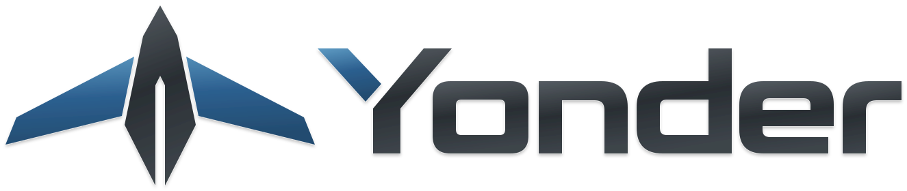
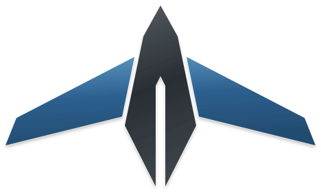
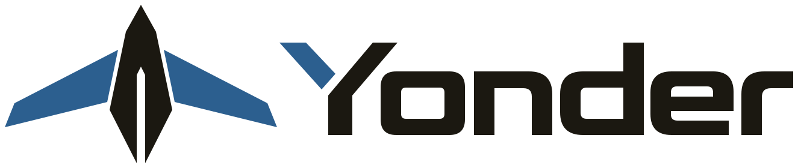

Yonder / Approved identity
Material finish · Vector artwork

Login
Header placement

Standalone emblem

Flat-colour alternate
Blue anodized-metal wings, satin graphite, and the open shoulder of the Y. The night variant lifts the ink and blue for the carbon panel.